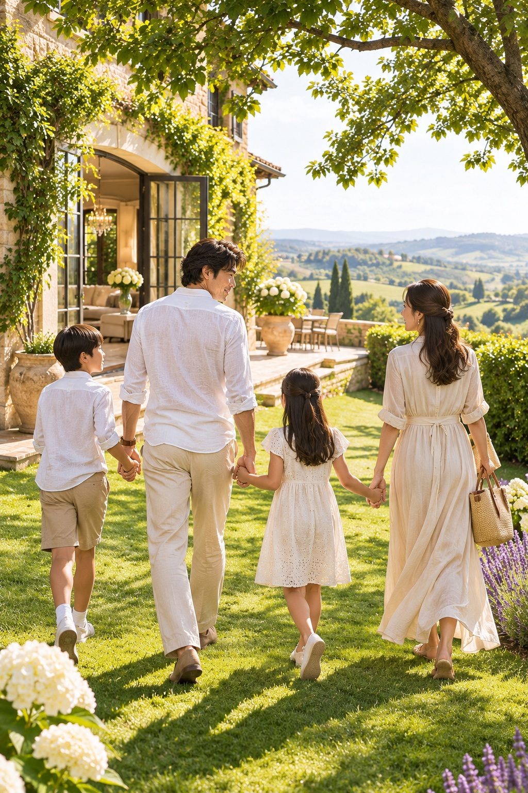

家族のための全体設計
ファミリーオフィスとは、経営者や資産家が、自分と家族の資産、事業、相続、教育、海外生活などを総合的に捉え、長期的な意思決定を支えるための仕組みです。

もともとは欧米の富裕層が、資産管理や税務、法律、相続などを専門家とともに管理するために発展させてきました。現在では、金融資産の運用だけでなく、事業承継、次世代の教育、家族の生活、将来の資産の引き継ぎ方など、幅広い問題を一つの方針のもとで考える役割を担っています。
海外の富裕層がファミリーオフィスを持つ理由は、単に多額の資産を保有しているからではありません。事業、金融資産、不動産、家族の生活、次世代への承継など、異なる問題が相互に関係しており、それらを個別に判断するだけでは、長期的な方針を立てることが難しいからです。
例えば、会社を経営する富裕層にとって、金融資産だけが財産ではありません。長年育ててきた事業や不動産、家族の生活基盤、次の世代に引き継ぐ教育や経験も、将来を考えるうえで重要な要素です。資産を増やすことだけでなく、その資産を何のために使い、どのように次の世代へ引き継ぐかまで考える必要があります。
ファミリーオフィスの本質は、多くの専門家を雇うことでも、資産を効率よく増やすことでもありません。自分と家族がどのような人生を送りたいのかを明確にし、その実現に向けて事業や資産をどう活用するかを考えることです。資産運用は、そのための手段の一つにすぎません。
経営者に必要な理由
経営者は日々、会社の成長に向けて多くの意思決定をしています。売上や利益、資金繰り、採用、事業投資などについて計画を立て、必要に応じて専門家の助言を受けながら経営を進めています。
ところが、自分自身や家族の将来については、会社ほど体系的に計画を立てていないことが少なくありません。事業が成長すれば、会社の株式、不動産、金融資産などが増えていきます。子どもの進学や海外移住、親の介護、相続、事業承継といった問題も出てきます。
さらに、会社を売却するのか、後継者に引き継ぐのか、いつまで経営を続けるのかによって、必要な資産やその管理方法も変わります。こうした問題は、それぞれ独立しているように見えて、実際には深く関係しています。
税務は税理士、法律は弁護士、資産運用は金融機関、不動産は不動産会社というように、それぞれの専門家に相談することはできます。しかし、個々の専門家が適切な助言をしていても、それが経営者本人と家族にとって最善の選択になるとは限りません。
例えば、税金を減らすことができても、資産の自由度が失われるかもしれません。高い運用利回りを期待できても、数年後に必要な教育資金や事業資金には適していないかもしれません。相続対策として合理的でも、家族の希望とは一致しないことがあります。
それぞれの判断が間違っているわけではありません。問題は、何を優先するのかという全体の方針がないまま、個別の対策が積み重なってしまうことです。ファミリーオフィスは、こうした判断を一つの方針のもとで整理するためにあります。
必要になる3つの場面
ファミリーオフィスが必要になる場面は、会社の売却、子どもの教育、海外移住、相続など、人によって異なります。共通しているのは、一つの決断が事業や資産、家族の生活など、複数の領域に影響することです。
30億円の売却後
例えば、50代の経営者が、長年育ててきた会社を30億円で売却したとします。売却によってまとまった資金を得たとしても、それだけで将来の生活が決まるわけではありません。むしろ、これまで会社経営を中心に組み立ててきた人生を、改めて考える必要が出てきます。
今後も新しい事業に取り組みたいのか。それとも経営の第一線から離れ、家族との時間を増やしたいのか。日本で暮らし続けるのか、海外にも生活拠点を持つのか。子どもには資産を残したいのか、それとも自分で生きる力を身につけてもらいたいのか。こうした希望によって、30億円の使い方は大きく変わります。
新たな事業を始めるのであれば、投資に回さず確保しておく資金が必要です。海外生活を希望するのであれば、居住地や税務、通貨、教育なども考えなければなりません。将来の相続を重視するのであれば、資産の保有形態や家族への引き継ぎ方も重要になります。
ここで最初に決めるべきことは、どの金融商品を購入するかではありません。今後の人生で何を実現したいのか、そのためにいくら必要なのか、どのようなリスクを取れるのかという順番で考えることです。
子どもの海外教育
一方、会社を売却する予定がなくても、ファミリーオフィスが必要になる場面はあります。例えば、会社経営を続けながら、子どもを海外の学校へ進学させたいと考えている経営者です。
学校を選び、学費を用意するだけであれば、教育の問題として考えられるかもしれません。しかし、家族が海外で暮らすことになれば、親の働き方や会社の管理体制、居住地、税務、資産の保有方法などにも影響します。
子どもの教育を優先して家族全員で移住するのか。経営者は日本を拠点とし、家族が海外で暮らすのか。日本と海外に生活拠点を持つのか。それぞれの選択によって、必要な資金や生活環境、仕事の進め方は変わります。さらに、子どもが将来どの国の大学へ進学し、どこで働くのかによっても、家族の長期的な計画は変わってくるでしょう。
教育は教育、事業は事業、資産は資産と別々に考えていては、こうした判断を十分に整理できません。子どもにどのような環境を与えたいのかという希望を出発点に、家族の生活と事業をどう両立するかを考える必要があります。
次世代への承継
相続や事業承継についても同じです。例えば、長年経営してきた会社や複数の不動産を所有している経営者が、子どもたちに資産を残したいと考えているとします。
税理士に相談すれば、相続税の負担を抑えるための方法を検討できます。しかし、子どもが会社の経営を望んでいなかったり、海外で生活していて日本の不動産を管理する意思がなかったりする場合、税務上有利な承継が家族にとって望ましいとは限りません。
会社を残すのか、売却して金融資産に換えるのか。不動産を引き継ぐのか、整理するのか。子どもたちに平等に資産を分けることが、必ずしも公平なのか。相続は、財産を誰にいくら渡すかという問題だけではありません。築いてきた事業や資産を、次の世代がどのように受け取り、活用していくのかまで考える必要があります。
このように、ファミリーオフィスの対象は、会社を売却した経営者や、すでに巨額の金融資産を持つ人だけではありません。事業を続けている段階でも、家族の将来に関わる大きな判断をする場面で、全体設計が重要になります。
全体設計で変わること
これら3つの事例に共通するのは、個別の問題を解決するだけでは十分ではないということです。会社売却後の資産運用も、子どもの海外教育も、次世代への承継も、最終的には本人と家族がどのような人生を望むのかという判断につながっています。
ファミリーオフィスの役割は、こうした複数の課題を整理し、何を優先するべきかを明確にすることです。すべての問題に一つの正解を出すのではなく、本人と家族の希望に沿って、納得できる判断を積み重ねられるようにします。
例えば、資産運用について考える場合でも、資産全体のうち、日々の生活に使う資金、将来の支出に備える資金、長期的に運用する資金、事業に投じる資金を区別することで、それぞれに適した管理方法が見えてきます。
海外教育を考える場合には、学校の選択だけでなく、家族の生活拠点と経営者の働き方を一緒に検討できます。相続や事業承継についても、税負担の軽減だけで判断するのではなく、家族の希望や将来の生活まで含めて考えられます。
もちろん、実際の税務申告や法律手続き、金融取引などには、それぞれの専門家が必要です。ファミリーオフィスは、そうした専門家に代わるものではありません。全体の方針を明確にしたうえで、必要な専門家の知識を適切な場面で活用する仕組みです。
そして、こうした仕組みを持つために、必ずしも専属の専門家を何人も雇ったり、大きな組織を設立したりする必要はありません。まず必要なのは、自分と家族の現状、希望、課題を整理し、これからの判断の基準となる設計を持つことです。
資産より、どう生きるか
経営者にとって、事業や資産は人生の大きな部分を占めています。しかし、会社を成長させることや資産を増やすこと自体が、必ずしも人生の最終目的ではありません。
どこで暮らし、誰と時間を過ごし、何に挑戦し、次の世代に何を残すのか。その希望が明確になって初めて、事業や資産の役割も定まります。
ファミリーオフィスとは、資産管理のためだけの仕組みではなく、本人と家族の将来を見据え、さまざまな判断を一つの方針につなげるためのものです。
会社に経営計画があるように、自分と家族の人生にも全体を見渡す設計があってよいのではないでしょうか。